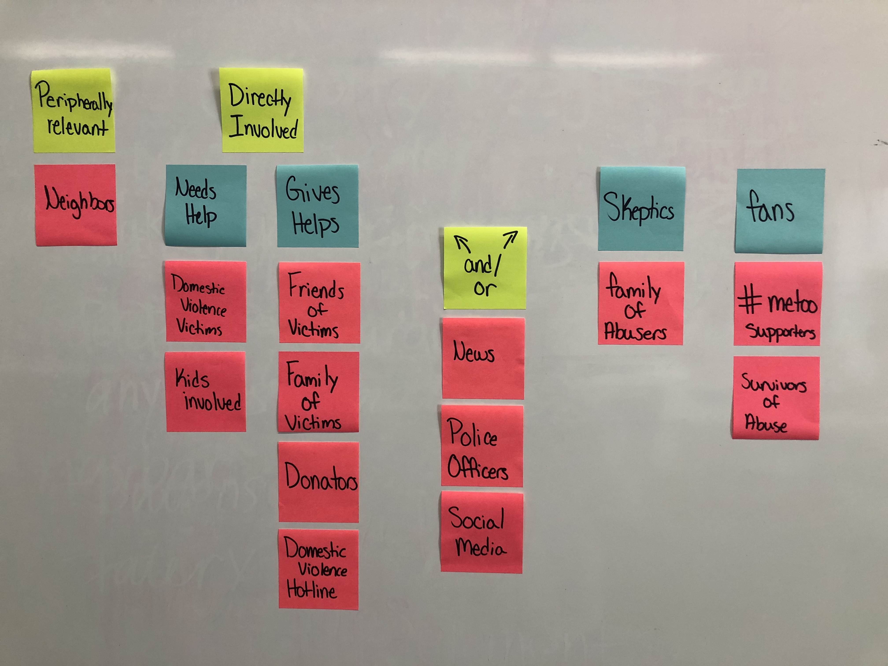
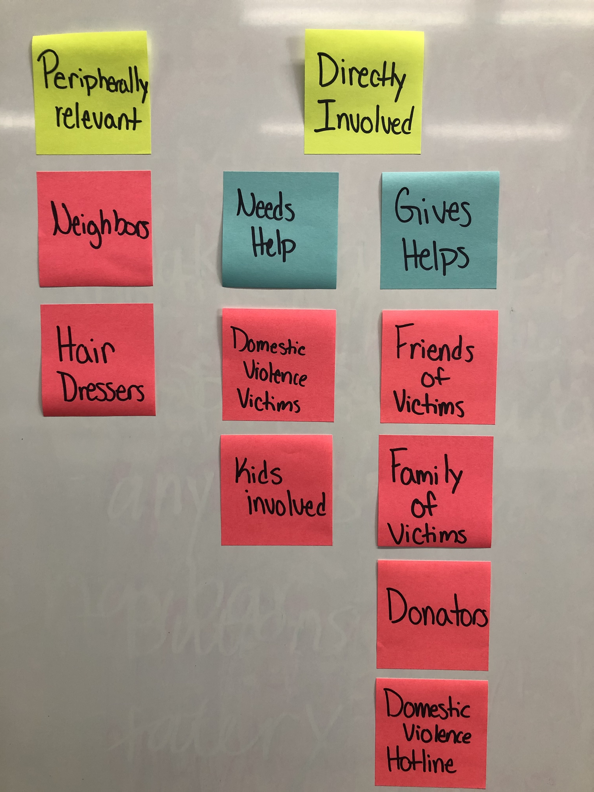
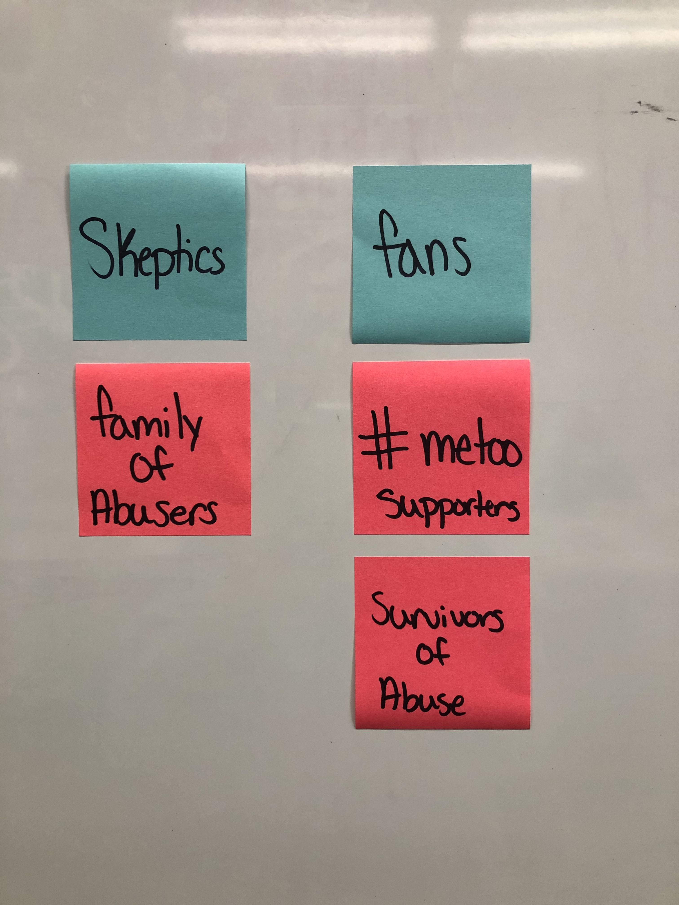
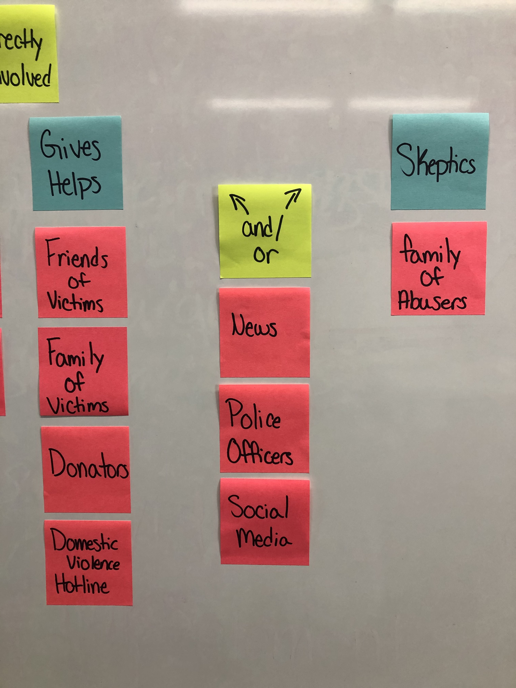

Audience and Goals
Time to get in the perspective of the audience and the company!
Define Your Audience
First, I began looking at the audience directly involved and then I slowly began to narrow down my audience so that I understood everyone who could be involved. This is my full chart of me trying to understand my audience and their goals of using the website of Meg's House. Through this, I have been able to pin point the audience involved and what their goals are while figuring out what category the user may fall under. Here you can view the full list of those directly involved, peripherally involved, skeptics, and fans. These full categories are divided into small groups that help me decide how they are using the website and if they are using it effectively. The main purpose of this is to enusre that we have what the user needs access to on the website.
This view point of the audience chart goes specifically into those who are directly involved or peripherally involved. This specifically shows who will be most active on the site and who will be less active on it. It shows divided categories of who needs help, which are the domestic violence victims and children involved. This also shows those who are often giving help, which are the friends and families of victims, donators, and domestic violence hotlines. The people involved who need help and who give help are both potentially active users on the website searching for help from a trust worthy non-profit organization.
 The skeptics and fans are also an important part of the audience involved. Although they will not be involved on the website as much as those directly involved, it is still important to consider them looking into things on the website. Since these skeptics may be on the website, it may be imporatnt to have a place for them to understand the laws of domestic violence and the signs of it, so that they can tell if they are reading the situation right. For the fans, they may be interested in knowing the statistics of domestic violence or be looking for fellow supporters.
Finally, there is a section to consider that involves the and/or category. This category focuses on the overlapping audience. This consists of the news, police officers, and potentially social media. Social media and the news can fall under giving help or the skeptics because the people on it will either be supporting the victims or questioning them. So this group of people may be on the website hoping to gain knowledge about domestic violence or potentially to go against the site. So it is important to think about how these users will use the websit while designing it. This also goes for the police officers who are either supporting the victim or supporting the abusers accusations. Overall, the website design needs to be inclusive of all parties.
Goals
Overarching Goals
A look at the goals of the different stakeholders.
Client
- To help domestic violence victims
- To allow easy access for donators
- To feel inviting so people want to seek help
- To show statistics of how many victims they have helped
- To show they also want to help children involved
- Priority is helping the victim
Audience
- To find help quickly and privately
- Donators looking to help
- Wish lists for the victims
- To find help for a friend or family member
- Volunteers or donators
Website
- To offer help quickly in case viewers don’t have much time
- To be inviting to increase people getting help
- Modern and comforting design
- Easy accessibility
- To help the victims
- To show support
Specific Goals
Narrowing down the audience to understand the users purpose
| User | Goal | Content/Action |
|---|---|---|
| Victims | Find help, receive donations, seek information, understand the situation they are dealing with | Find a safe place like Meg's House, look for information on what their next step is, find a trusting company to help them through their situation |
| Friends and Family of Victims | Find credible information, seek advice, donate, find hours or support | Donate, look into getting friend or family member help, try to locate safe place |
| Survivors | Offer to help, donate, speak about past situations, volunteer | Donate, find ways to help, let company know if someone is struggling |
| Neighbors | Find credible information, look for help, look into what they can do to help the victim, donate | Donate, talk with someone for help, keep an eye out for their neighbor |
| Officials | Locate a safe place for victims, donate, locate help, gather credible information | Donate, get in contact with employees |